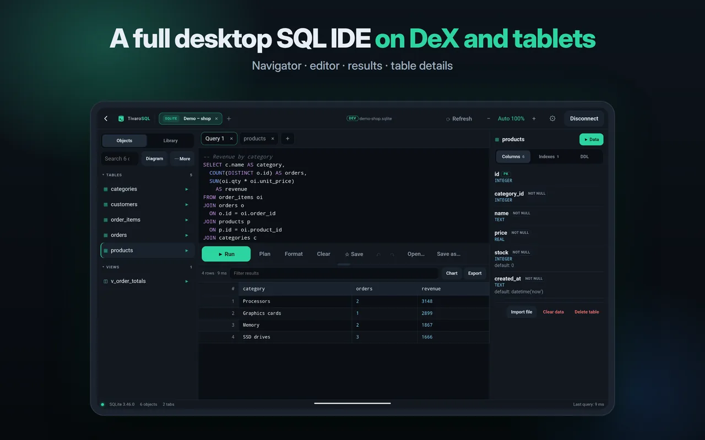

Guide
Your phone as a desktop SQL IDE (Samsung DeX, USB-C)
Updated 2026-11-23
Modern phones are as fast as many laptops. Connect one to a monitor, add a keyboard and mouse, and TivaroSQL Studio turns into a desktop database IDE: navigator on the left, editor and results in the middle and table details on the right.

How to set it up
- Connect the phone to a monitor with a USB-C to HDMI cable or dock (Samsung DeX), or wirelessly with DeX.
- Pair a Bluetooth keyboard and mouse.
- Open TivaroSQL Studio – from 900 px width the desktop layout appears automatically; from 1280 px you also get the details pane.
- Use Ctrl+Enter to run the statement under the cursor and Ctrl+Shift+Enter to run the whole script.
What you get on the big screen
- Connection tabs and query tabs side by side.
- Resizable panes and automatic UI scaling (zoom with − / +).
- Double-click a row to edit it, with SQL preview.
- Status bar with server version, object count and last query time.
The same layout works on Android tablets and Chromebooks.